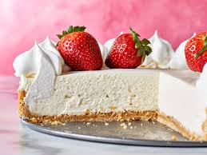

No bake cheesecake

Description
This is a No Bake Cheesecake that tastes very similar to a classic Baked
Cheesecake, made without the fuss of baking! It boasts an exceptionally
smooth, light-yet-creamy filling and a buttery, crumbly crust that
everybody is mad for.
Ingredients
- Cream cheese
- Gelatine
- Water
- Whipping cream
- Sugar
- Vanilla
- Lemon juice
- Salt
Steps
- Flip the base of a 20cm/8″ springform upside down.
-
Clip with excess paper sticking out – Grease very lightly with butter,
just enough to hold the paper in place so it’s not sliding around when
you clip the sides in. Then top with a square sheet of paper and clip
the sides in so the excess paper is sticking out.
-
Break biscuits up roughly by hand and put them in a food processor.
-
Blitz until they become fine crumbs, about 10 to 15 seconds on high,
depending on how powerful your food processor is.
-
Add the butter, cinnamon, sugar and salt, then blitz again until it
becomes wet sand.
- Wet sand! It should press together when pinched between fingers.
-
Roughly press – Pour the crumbs into the prepared pan, roughly spread it
around the base. Push it up the walls and press it up using a rubber
spatula. No need to be overly neat at first, do it roughly initially
then refine it (next step).
-
Press and neaten – Use something with a flat base and vertical walls (I
use a measuring cup) to press the crumbs firmly into the walls and the
base. It will seem a little fragile at this stage but once the filling
is in and the cheesecake has been refrigerated, the crust becomes firm
and crispy.